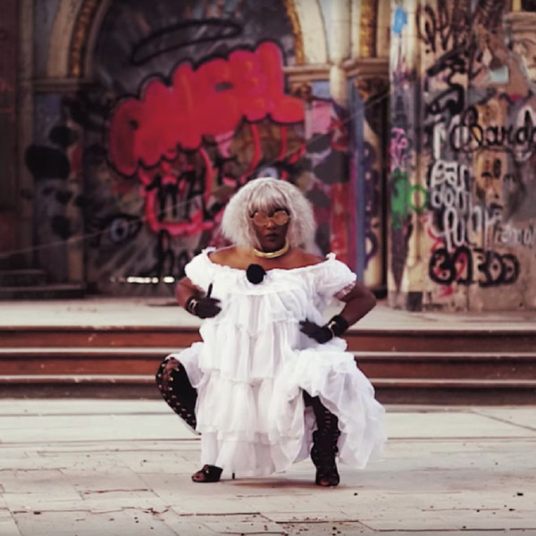
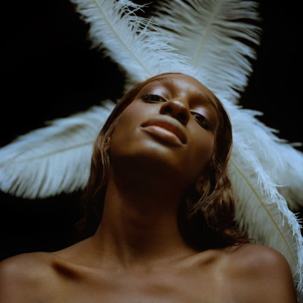
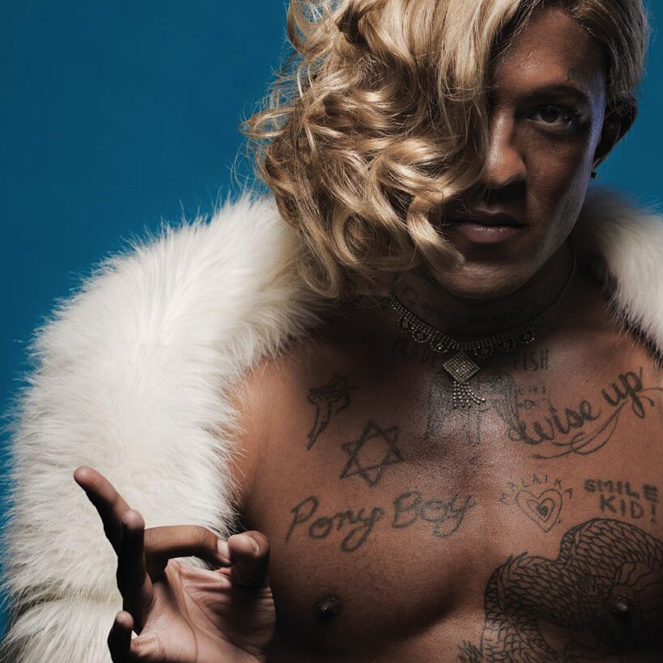
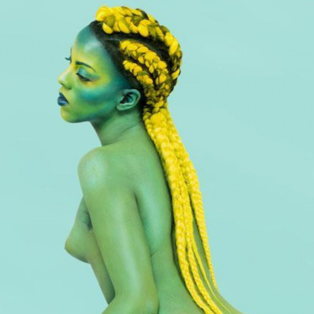
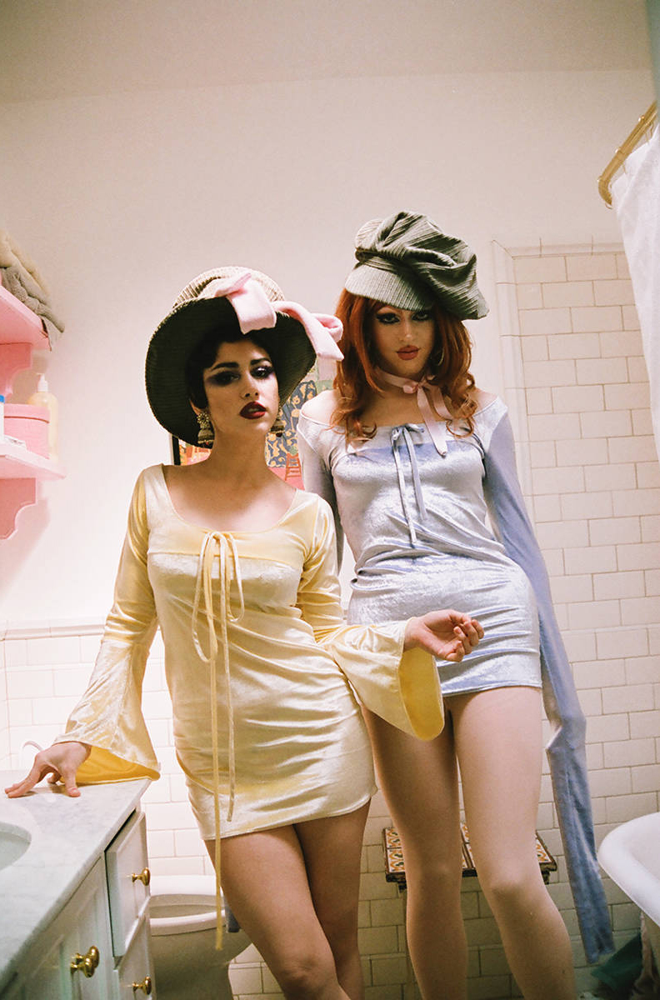
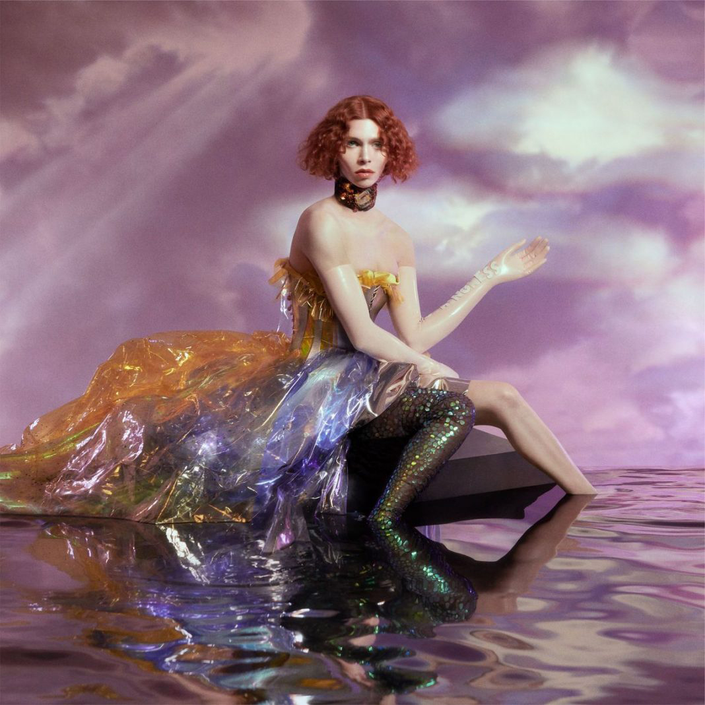
She is an American artist, writer, performer, DJ, and co-founder of the New York-based Shock Value project. Huxtable has exhibited and performed at various venues, including Reena Spaulings Fine Art, Project Native Informant, Artists Space, the New Museum, the Museum of Modern Art in New York, the Portland Institute of Contemporary Arts, and the Institute of Contemporary Arts. In his DJ activity, Huxtable regularly integrates his poetry into his remixes.
A real-life couple (Queen Sateen and Exquisite) and disco duo from Brooklyn, is known for blending strong social statements. Exquisite came out as trans in 2016, and they’ve only continued their ascent since. Their self-titled EP, released last year, serves as a “flamboyant celebration of the couple’s journey, channeling their collective queerness into music that’s equally a political war cry and a flashy pop project”.
This Scottish electropop star’s music is as fun and bubbly as it is occasionally strange, but that hasn’t stopped SOPHIE’s climb to become one of the hottest artists on this list. Her work’s mix of traditional instruments with plenty of nontraditional noises and vocal effects (like actual bubble and slurping sounds), are stuff that’s earned praise from a slew of outlets, including Billboard and Pitchfork.
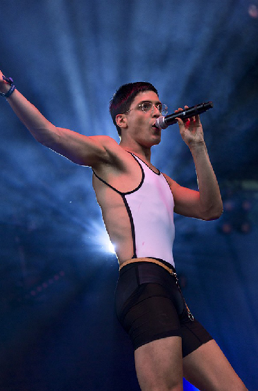
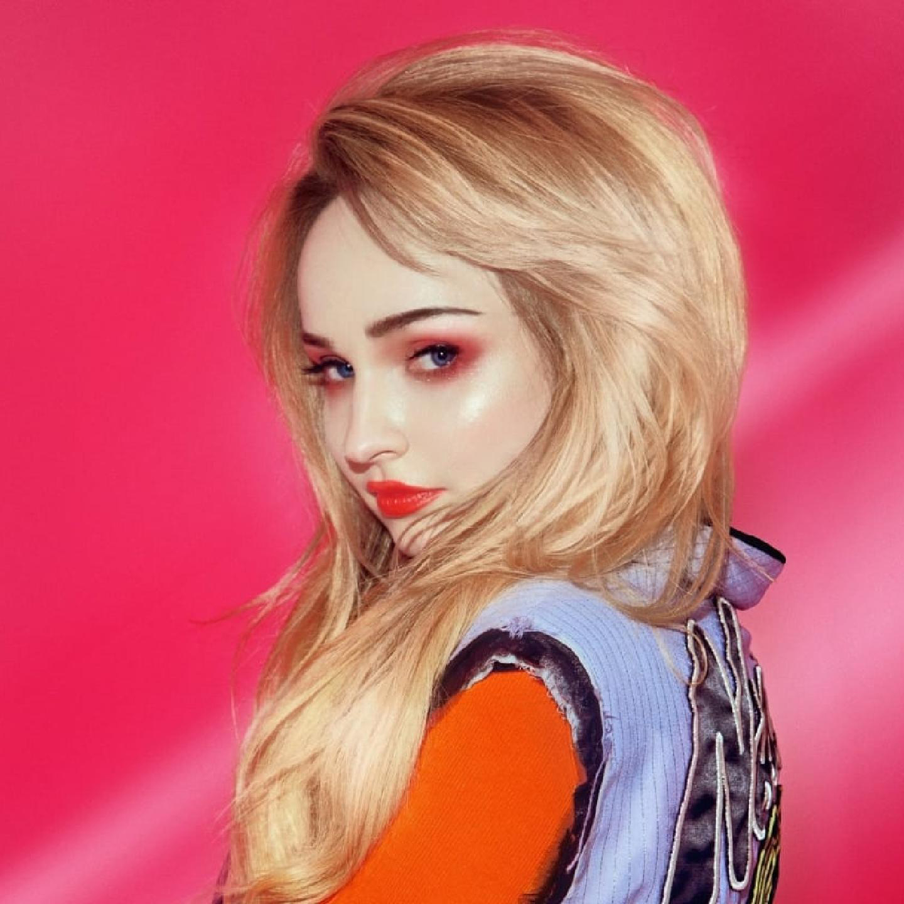
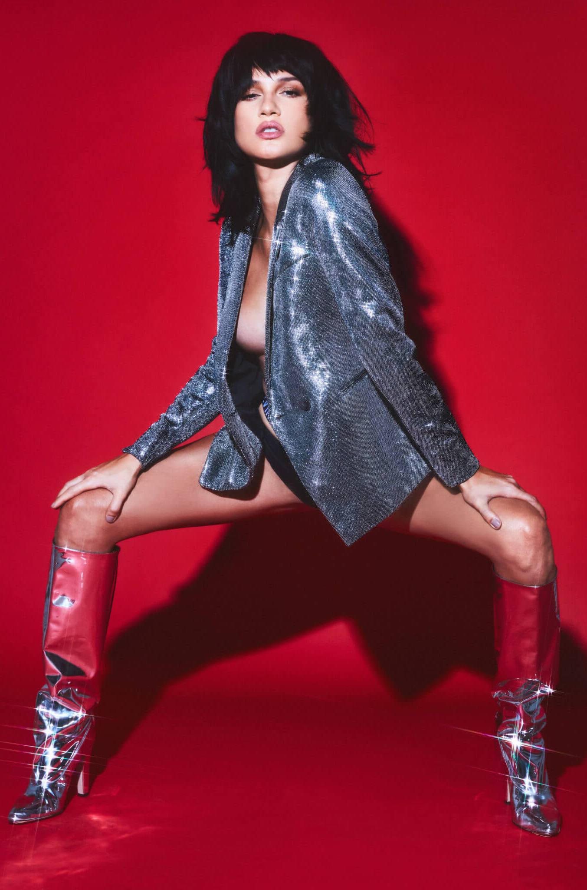
Alejandra Ghersi, (formerly Alejandro Ghersi; Caracas, October 14, 1989), better known by her stage name Arca, is a Venezuelan transgender singer and producer, based in Spain, whose work is specialized in electronic and experimental music. She has released three albums and collaborated as a producer on artists such as Björk, Kanye West, Kelela and FKA Twigs.Her debut studio album, Xen, was released on 4 November 2014 via Mute Records.
If you’ve been to a gay bar in the past year, chances are you’ve heard of Kim Petras — and if not, you’ve definitely heard her music. With her long blond hair and a wardrobe heavy on relaxed ‘90s fashion, the rising star has made a name for herself with her shamelessly cheeky brand of bubblegum pop. From the #SugarDaddyGoals of debut single “I Don’t Want It All” to the teenage diary entry relatability of “Hillside Boys,” Petras’ music balances tongue-in-cheek lyrics with irresistibly catchy hooks.
She is an American singer, songwriter, actress, essayist, and producer, also known for her work as Jessica 6. Ruiz has spoken openly about discrimination in the music industry and has published intimate essays and poems on feminism, sex, romance, and identity of gender. On March 9, 2017, Jezebel published Ruiz's essay entitled "The Persistent Trauma of the Search for Love as a Trans Youth" where he addresses how shame can lead to abusive relationships.
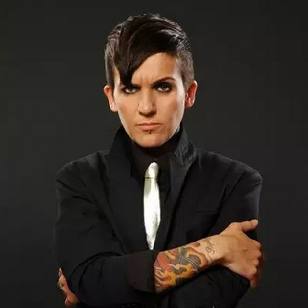
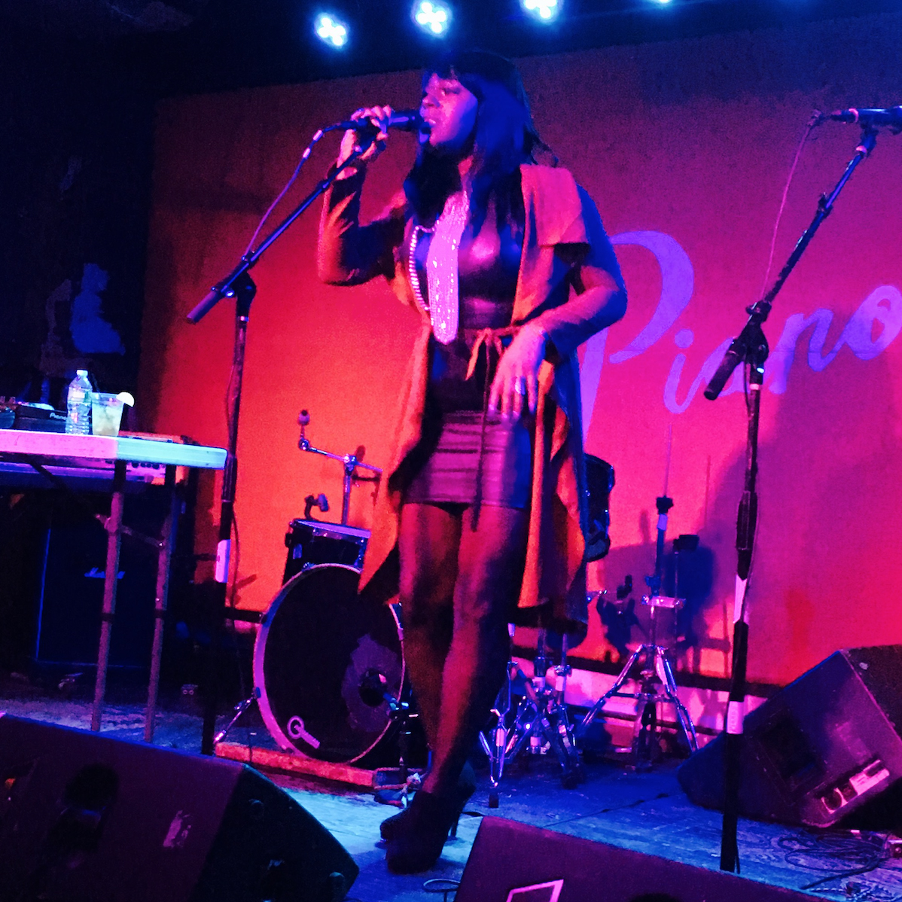
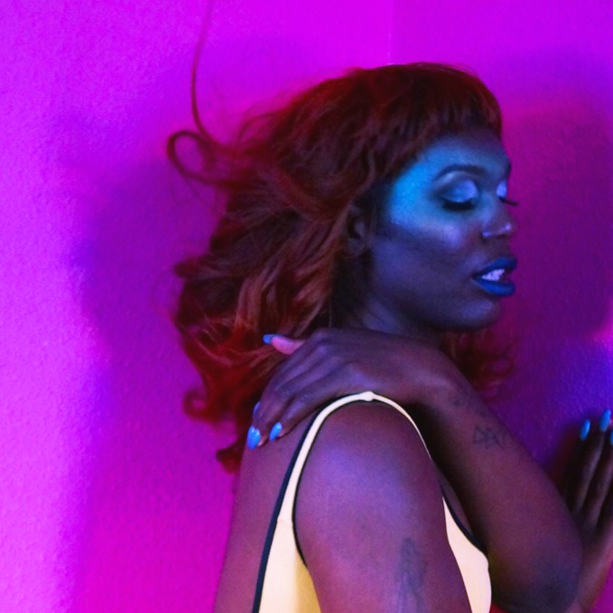
A rock band founded in 2004 in Toronto by leader Lucas Silveira. The band has had a colorful history that became an artistic parallel to Silveira's intersection of personal with creative life. The Cliks no longer work due to Silveira's hearing loss and tinnitus complications, but occasionally, when the musical siren call, you can hear him doing a low-profile performance, acoustic guitar, or piano.
Exploded onto the scene in 2016 with her scathing yet molasses-sweet soul single “I Am Her.” With lyrics like “Don't care too much what other people say/I get along swell by my goddamn self/Never asked for no one's philosophy/It's obvious I'm proud of me,” the song tackles identity and self-esteem in unabashed terms. The music it’s largely about about loving herself as a Black trans woman, and is usually as political as it is catchy.
Having live since 2011, the young woman is not only a leader in her trans community, but also a highly sought-after nightlife presence, a member of a growing wave of trans talents of color who are finally creating events that cater to her own interests. She is a rising star, her musical mastery is a magnificent canvas on which to paint the realities of life as a trans black woman in America, swinging on the brink of fascism and a white supremacist government.
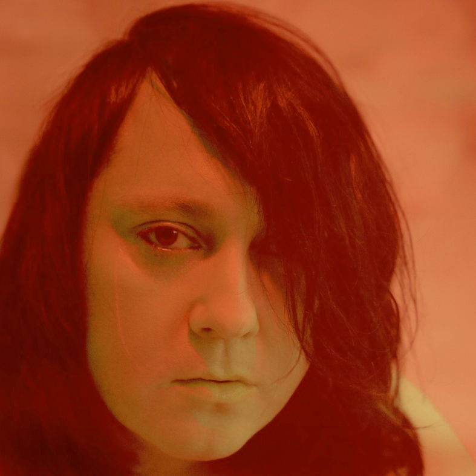
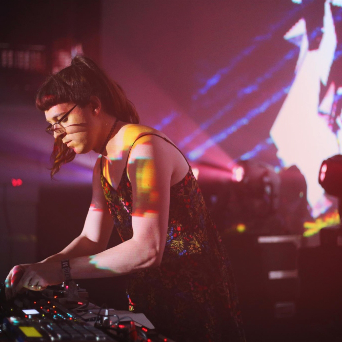
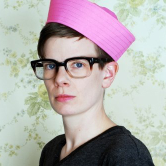
She is a transgender singer, songwriter and visual artist, best known as the leader of the band Antony and the Johnsons. Anohni is transgender and uses the feminine to self-refer. In an interview with Flavorwire in November 2014, she stated, "My closest friends and family use the female pronoun to refer to me. I have not asked the press to do so in a specific way ... In my personal life I prefer "she" I think words are important. To call a person by their chosen gender is to honor their spirit.
Maya Bouldry-Morrison started making music as Octo Octa in 2011 thanks to the 100% Silk label.
After becoming a transgender person in 2016, Maya, already under the stage name Octo Octa, released her successful second album. This 2017 work was titled "Where Are We Going?" and it was published on the HNYTRX label which is part of Honey Soundsystem, a collective of gay DJs.
Rae Spoon is a non-binary musician and author. He have released nine solo albums and toured Canada and internationally. Rae owns and runs an independent record label called Coax Records that has released fifteen albums by Canadian and international artists. They have been nominated for two Polaris Awards, a Lambda Literary Award and a Western Canadian Music Award.